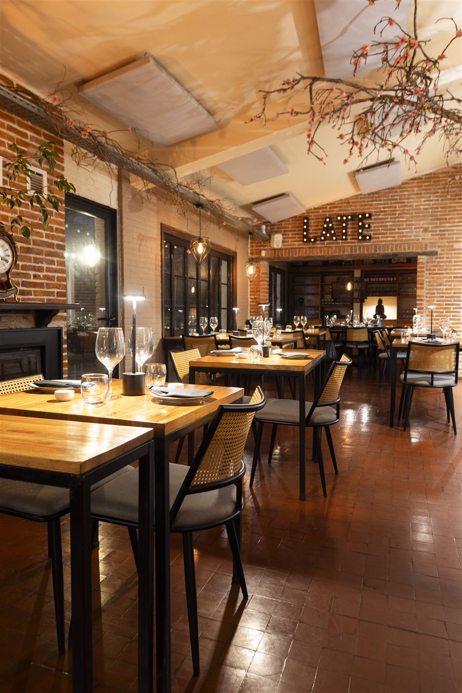
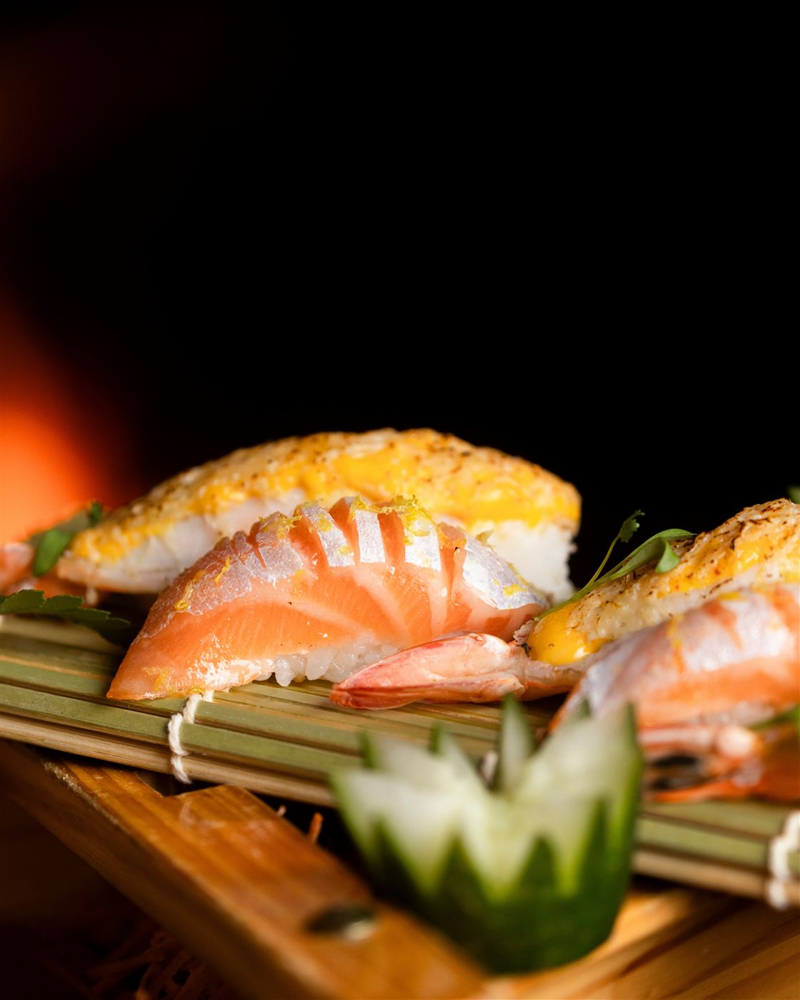
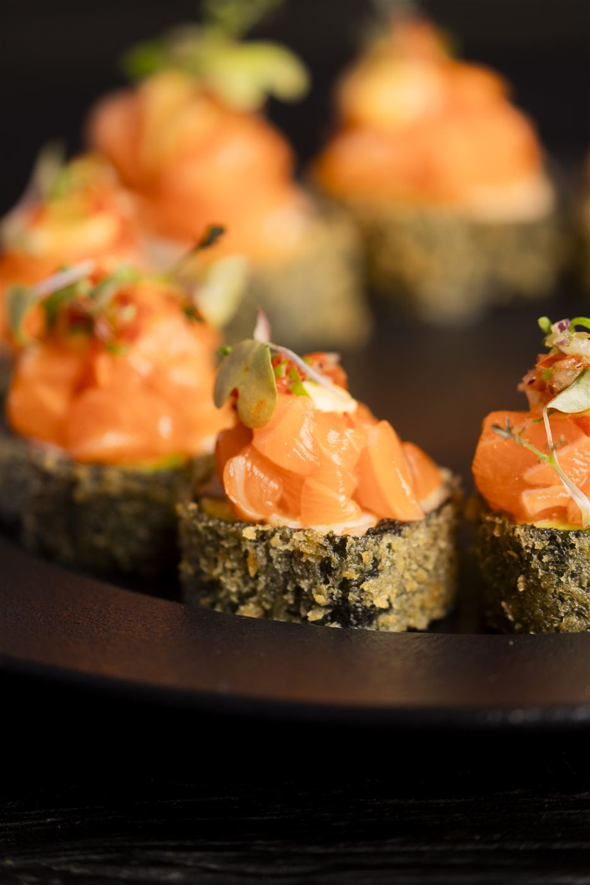

La cocina de autor es poner tu personalidad en lo que amás. Bienvenidos.

Cocina de autor, producto excepcional y una identidad que emociona. Nuestra propuesta fusiona la tradición peruana y la precisión asiática en una interpretación Nikkei elegante y vibrante, donde cada plato cuenta una historia de técnica, cultura y sensaciones.
El espacio, íntimo y cálido, invita a detener el tiempo: iluminación cuidada, buena música y un servicio cercano. Somos pet friendly, y aunque el pescado fresco es el protagonista, hay opciones con carne, vegetarianas, sin gluten y menú kids.
Bajo la dirección de Juan Diego San Martín, nuestro equipo de cocina y barra, especializado en Nikkei, sushi y coctelería, pone un sello propio en cada plato, cada roll y cada trago de autor.
Nuestra cocina
Fusionar
No es solo juntar ingredientes de distintos lugares: es encontrar un punto de encuentro entre culturas, técnicas y sabores. Tomamos la intensidad de la cocina peruana, sus ajíes, ceviches y marinadas, y la combinamos con la precisión, los cortes y las cocciones del universo japonés y Nikkei.
El producto primero
Estamos en Punta del Este, rodeados de mar y de productores excepcionales. La inspiración viene de Perú y de Asia, pero el producto es uruguayo: la pesca fresca y de estación es siempre el punto de partida. Nuestro no negociable es un producto fresco y de calidad.
Más allá del sushi
Buscamos contraste y equilibrio: algo cremoso junto a algo crocante, la acidez que equilibra, el picante en el momento justo. Como en la pesca del día, con aligot de papa trufado, salsa de almendras y ajos tostados.
“La cocina de autor es poner tu personalidad en lo que amás; ese sentimiento la convierte en algo distinto.”Juan Diego San Martín, propietario
Una nueva etapa
Astrid Acuña, chef ejecutiva
Cocinera peruana con sólida formación y sensibilidad artística, Astrid fue mano derecha de Gastón Acurio, figura emblemática de la cocina peruana contemporánea. Reúne lo mejor de la tradición limeña con una mirada moderna sobre la cocina Nikkei.
Su llegada impulsa una nueva etapa en Late: una cocina aún más precisa, elegante y expresiva, con técnica, creatividad y un respeto absoluto por el producto.
La experiencia Late
Nikkei bar
Omakase de 15 a 60 piezas, creación de nuestros itamae, y omakase veggie.
Ceviche bar
Clásico, tres ajíes, mixto, criollo y pasión, o la degustación de tres.
Platos intervenidos
Nuevos platos de la carta intervenidos por Astrid Acuña.
Late en casa
Lo mejor de nuestra propuesta en la puerta de tu casa: la misma calidad y frescura del restaurante. #LateEnCasa
Catering
Llevamos la cocina de Late a tus fiestas y eventos privados: consultanos.


El restaurante
- Pet friendlyTu mascota es bienvenida.
- Pescado frescoEl protagonista de la carta.
- Para todosOpciones con carne, vegetarianas, sin gluten y menú kids.
- Tragos de autorClásicos, sin alcohol y vinos uruguayos y argentinos.
- AlmuerzosSábados y domingos de 12 a 16 h.
- Todas las tarjetasPagá como prefieras.
- Pastelería propiaPostres que hacen honor a nuestro nombre.
- Late en casaDelivery y catering para tu hogar o tu evento.
Opiniones y recomendaciones
Reservá tu mesa
Reservá online o escribinos por WhatsApp al 095 655 081. También podés llamarnos al 4248 1817 o escribir a reservas@lateresto.com.